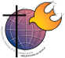

Ao longo da história da civilização, o
ESPÍRITO SANTO apesar de invocado diariamente
Ao longo da história da civilização, o
ESPÍRITO SANTO apesar de invocado diariamente
nas celebrações eucarísticas e em
Grupos de Oração, não é muito conhecido e continua sendo
esquecido pela maioria dos cristãos, que não tiveram acesso as
preciosas cartas de São Paulo, cujo conteúdo revelam a sua
admirável personalidade e o Divino poder carismático,
vivificador e impulsionador da Igreja.
Com exceção
do tempo apostólico, quando o ESPÍRITO, teve um terreno propício
para atuar e operou com inigualável realce, ao longo dos séculos sua
presença ficou aparentemente oculta.
Com a realização
do Concílio Vaticano II, aconteceu o impulso que faltava, através
das diversas manifestações dos padres e bispos conciliares e
principalmente do Papa Paulo VI, exaltando o ESPÍRITO SANTO
e convidando os cristãos à conhece-LO, fato que se constituiu
num eficientíssimo marco na história da Igreja Católica
Apostólica Romana.
Entretanto, ainda que
poucas, é justo mencionarmos as diversas ocorrências anteriores, que
se ordenaram como etapas iniciais no conhecimento do ESPÍRITO.
Embora de maneira lenta e descontínua, foram inspiradas e
positivas, e tinham o objetivo de colocar o ESPÍRITO DE DEUS no
seu lugar de destaque na história da humanidade. É assim que
nos Concílios Ecumênicos de Nicéia ( ano 325 ) e de
Constantinopla ( ano 381 ), proclamaram o Símbolo da Fé,
dizendo que o
"ESPÍRITO SANTO falou pelos profetas"
e também "ELE é o SENHOR da
vida"
; no século passado, em 1897, o Papa Leão XIII publicou a Carta
Encíclica "Divinum
illud munus" , dedicada ao ESPÍRITO PARÁCLITO e também, surgiu
a senhora Helena Guerra, na Itália, uma verdadeira apóstola do
ESPÍRITO SANTO, que se destacou pela perseverança e fervor com
que escrevia cartas às autoridades, incentivando e propondo
modos de devoção ao ESPÍRITO DO SENHOR; Sua Santidade o Papa
Pio XII, também se manifestou na Carta Circular Pontifícia "Mystici Corporis"
, em Junho de 1943, na
qual destaca a obra do ESPÍRITO SANTO e convida os fiéis a conhece-LO,
a fim de serem beneficiados pelos carismas que ELE derrama sobre as
pessoas.
Mas sem dúvida,
foi no Concílio Vaticano II que o ESPÍRITO DE DEUS teve a oportunidade
de luzir de maneira brilhante e concreta, porque sendo um evento
ecumênico, atraiu a atenção de todo o mundo. Nele, os
padres conciliares foram inspirados a entender a missão do ESPÍRITO
e deram realce ao extraordinário poder de renovação interior que ELE
opera nos cristãos, aprovando os documentos "Ad Gentes" e "Lumen Gentium" , assim como todos os demais
documentos, tão importantes para a vida da Igreja.
O Papa Paulo VI,
incentivador da atualização da doutrina sobre o ESPÍRITO
SANTO, na Encíclica
"Evangelli Nuntiandi" , disse:
"ELE
é a alma desta Igreja. ELE é quem explica aos fiéis o sentido
profundo dos ensinamentos de JESUS e de seu mistério. ELE é
quem, hoje como nos primórdios da Igreja, atua em cada
evangelizador que se deixa possuir e conduzir por ELE e põe nos
lábios as palavras que por si só não poderia encontrar,
predispondo também a alma daquele que escuta, para faze-la
aberta e acolhedora da Boa Nova e do Reino Anunciado. As
técnicas de evangelização são boas, mas nem as mais
aperfeiçoadas poderiam substituir a ação discreta do
ESPÍRITO. A preparação mais refinada do evangelizador não
consegue absolutamente nada sem ELE. Sem ELE, a dialética mais
convincente é impotente sobre os espíritos dos homens. Sem ELE,
os esquemas mais elaborados se revelam desprovidos de todo
valor". (n.75)
Na abertura
da terceira Sessão do Concílio, Sua Santidade o Papa Paulo VI, voltou
a lembrar aos conciliares, que foram dois os agentes que JESUS
prometeu e enviou para a continuidade de sua obra: o Apostolado e o ESPÍRITO
SANTO, dizendo:
"O
Apostolado é o agente externo e objetivo, forma por assim dizer,
o corpo material da Igreja, dá-lhe as suas estruturas visíveis
e sociais; e o ESPÍRITO SANTO é o agente interno, que influi no
interior de cada pessoa, como influi na comunidade inteira,
animando, vivificando e santificando".
Dessa forma,
estimulados pelos pronunciamentos das autoridades eclesiásticas,
após o Concílio Vaticano II, surgiu o
Movimento Carismático Cristão, que despertou os cristãos e
toda humanidade, para a realidade do ESPÍRITO, criando as noites
e os dias de louvor, demonstrando com alegria e fervor, um
profundo sentimento de amor ao ESPÍRITO SANTO, tributando-lhe
uma devida e merecedora honra , como manifestação de carinho e
de agradecimento, por sua inconfundível atuação no seio da
Igreja.
Entretanto, ainda em
nossos dias, são muitos os que não assimilaram corretamente esta
realidade, porque não compreendem a ação do ESPÍRITO na vida
das pessoas e na Igreja. Uma maioria participa do júbilo dos encontros,
mas geralmente se portam, como se aquela reunião fosse um
inconsequente e saudável modo de distração, ou como se fosse
um acontecimento que apenas desperta a curiosidade ou
simplesmente um encontro social. Muitos frequentam as reuniões
carismáticas atraídos somente pela beleza das músicas, não
conseguem enxergar a maravilhosa Obra que o PARÁCLITO realiza
em cada indivíduo, independentemente de qualquer merecimento da
humanidade.
Se por um
lado a misericórdia do ESPÍRITO quando atua, não olha para as
fraquezas e limitações das pessoas, por outro lado ELE também
não perde o estímulo em ver um número reduzido de fiéis que
procuram caminhar pela vereda da santidade, colocando DEUS
corajosamente como objetivo maior e mais sublime, na existência.
Para confirmar
esta realidade, ou seja, o imprescindível valor do ESPÍRITO DO
SENHOR na vida da humanidade, JESUS durante a Última Ceia, no
Discurso de Despedida , revelou com ênfase aos Apóstolos a
grandeza da "força" do ESPÍRITO, e a extraordinária
obra que ELE realizaria em benefício de todas as gerações :
"Quem
não me ama, não guarda as minhas palavras; e a palavra que
ouvis não é minha, mas do PAI que me enviou. Estas coisas vos
tenho dito estando entre vós. Mas o PARÁCLITO, o ESPÍRITO
SANTO que o PAI enviará em meu nome, é que vos ensinará tudo
e vos recordará tudo o que EU vos disse". (Jo 14,24-26)
Então
percebam: "...
vos ensinará tudo e vos recordará tudo o que EU vos disse"
. Esta é a
Missão do ESPÍRITO SANTO , que JESUS anunciou e que
os Apóstolos tiveram uma surpreendente experiência, no dia
de Pentecostes. Os Discípulos conviveram com JESUS durante
a Vida Pública, viram a grandeza e a sobrenaturalidade de Sua
Obra: curando cegos, coxos, epilépticos, exorcizando pessoas
que estavam na posse de Satanás e até ressuscitando mortos,
mesmo assim,
"as vezes duvidavam DELE"
, não percebiam a Sua
Divindade e não compreendiam a finalidade de Sua Missão.
Após todos os acontecimentos que culminaram com a Morte
e Ressurreição do SENHOR, quando ELE preparava-se para
retornar ao SANTO PAI, ainda não entendiam a missão DELE,
perguntaram-LHE :
"SENHOR, será agora que haveis de restaurar a
realeza em Israel ?" (At 1,6) Isto significa dizer, que apesar de terem
visto tanta coisa maravilhosa e ouvido os ensinamentos DELE,
não compreenderam o principal objetivo e o valor da Obra
de JESUS.
Dez dias após a
ASCENSÃO DO SENHOR, aconteceu a grande manifestação que
assombrou muita gente em Jerusalém; veio o ESPÍRITO SANTO
na plenitude da força Divina e lançou línguas de fogo sobre os
Discípulos e NOSSA SENHORA reunidos no Cenáculo, operando um
maravilhoso milagre; como se tivesse arrancado os tampões que
vedavam os seus ouvidos e removido o véu que impedia a lucidez
da visão, instantaneamente todos eles compreenderam a extraordinária
Obra de JESUS, tudo o que ELE representava, a Sua Personalidade, a
Sua Obediência ao SANTO PAI, como NELE se cumpriam as Escrituras,
os Seus ensinamentos e a missão que deixou para cada um deles
impulsionar a Igreja, que acabava de nascer.
Este, meus prezados,
é o ESPÍRITO SANTO que vive no interior de cada um de nós, que
recebemos no dia do Batizado e que precisamos conhecê-LO, desperta-LO
em nosso coração, estimulando-O com orações e atitudes de amor,
a fim de podermos sentir as vibrações dos seus preciosos carismas,
que verdadeiramente operam em todas as pessoas, clareando a
consciência da utilidade individual de cada um no conjunto da
humanidade e primordialmente, conformando o caráter e as
virtudes das pessoas, ensejando ao fiel buscar o modelo Divino, a
fim de alcançar a paz interior e júbilo existencial, para sua
satisfação pessoal e maior honra e glória da SANTÍSSIMA
TRINDADE que nos criou.

Próxima Página 

 Página Anterior
Página Anterior
Retorna ao Índice